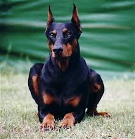

Dorberman
-Chó Dorberman được nhà lai tạo người Đức Louis Dorberman nhân giống thành công năm 1890 bởi ít nhất 4 giống chó.
-Tỉ lệ kết hợp giữa 4 giống chó với nhau gần như đã bị thất lạc.
-Chó Dorberman rất dũng mãnh, cơ bắt, cổ cao, ta dụng chân dài và nhanh nhẹn.
-Một chú Dorberman trưởng thành nặng từ 30-45kg tùy theo giới tính đực cái, bản tính Dorberman khá hung giữ, rất cảnh giác với người lạ nhưng trung thành với chủ nên thường được các gia đình nuôi làm chó giữ nhà.

Chó Dorberman mới phổ biến trong một vài năm gần đây nên có giá khá đắt, thường trên 10 triệu/con.